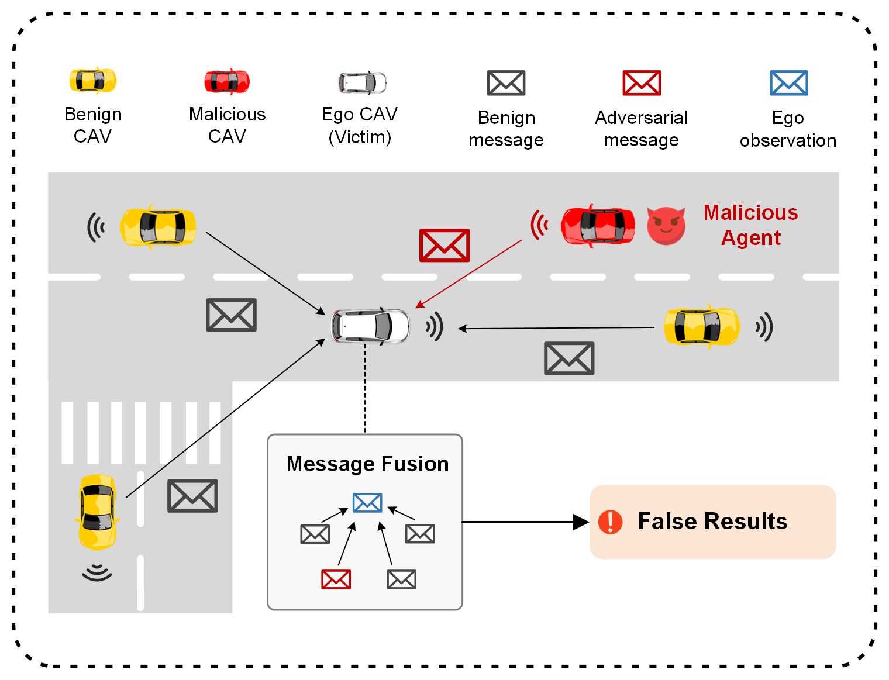
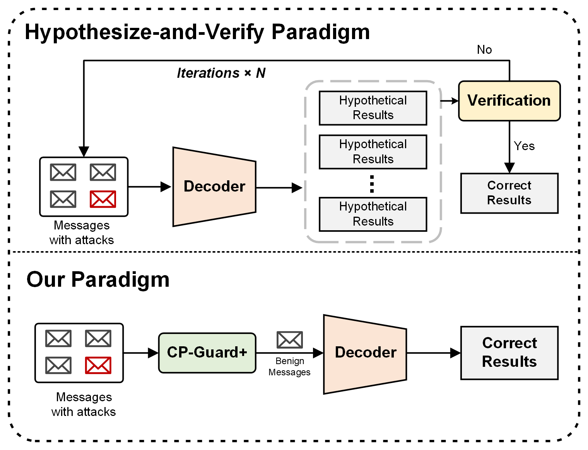
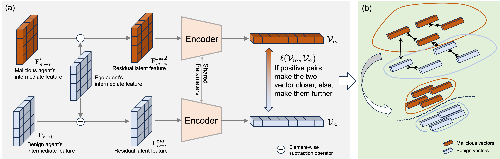
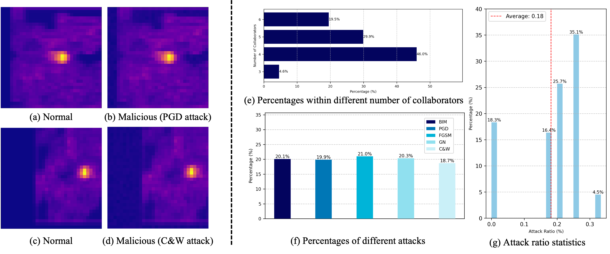
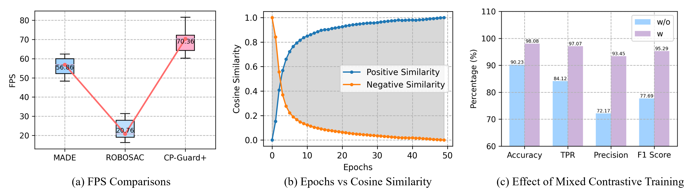
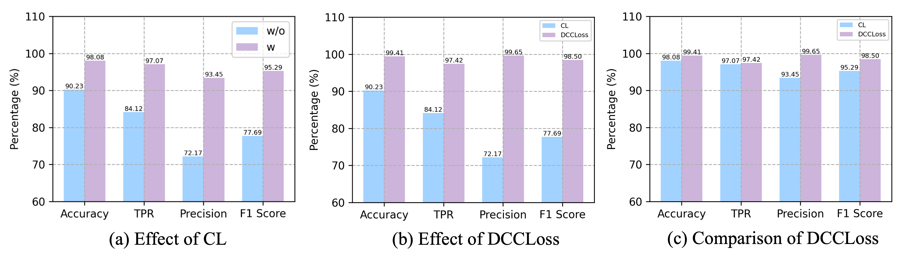
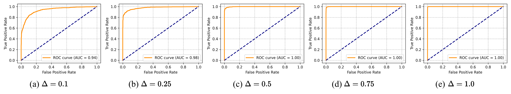

Contents
Abstract
Collaborative perception (CP) is a promising method for safe connected and autonomous driving, which enables multiple connected and autonomous vehicles (CAVs) to share sensing information with each other to enhance perception performance. For example, occluded objects can be detected, and the sensing range can be extended. However, compared with single-agent perception, the openness of a CP system makes it more vulnerable to malicious agents and attackers, who can inject malicious information to mislead the perception of an ego CAV, resulting in severe risks for the safety of autonomous driving systems.
To mitigate the vulnerability of CP systems, we first propose a new paradigm for malicious agent detection that effectively identifies malicious agents at the feature level without requiring verification of final perception results, significantly reducing computational overhead. Building on this paradigm, we introduce CP-GuardBench, the first comprehensive dataset provided to train and evaluate various malicious agent detection methods for CP systems. Furthermore, we develop a robust defense method called CP-Guard+, which enhances the margin between the representations of benign and malicious features through a carefully designed mixed contrastive training strategy. Finally, we conduct extensive experiments on both CP-GuardBench and V2X-Sim, and the results demonstrate the superiority of CP-Guard+.
Problem Illustration


Our Approach
CP-GuardBench Dataset
The first comprehensive dataset specifically designed for training and evaluating malicious agent detection methods in collaborative perception systems, containing diverse attack scenarios and perturbation levels. This dataset enables systematic evaluation of defense methods across multiple attack types and intensities.

Mixed Contrastive Training
A carefully designed training strategy that enhances the margin between benign and malicious feature representations through mixed contrastive learning. This approach enables robust detection of adversarial agents while maintaining computational efficiency.
Feature-Level Detection
Direct identification of malicious agents at the feature level before final perception results are computed, achieving superior detection accuracy with minimal computational overhead compared to traditional hypothesize-and-verify methods.
CP-GuardBench Dataset

Dataset Features
- Comprehensive Attack Coverage: Includes PGD, BIM, C&W, FGSM, and Gaussian noise attacks across multiple perturbation levels (Δ = 0.1, 0.25, 0.5)
- Realistic Scenarios: Based on V2X-Sim dataset with realistic traffic scenarios and sensor configurations
- Benchmark Ready: Standardized evaluation protocols and metrics for consistent comparison across methods
- Open Access: Publicly available on Hugging Face for community use and further research
Experimental Results
CP-GuardBench Performance
At perturbation budget Δ = 0.25, CP-Guard+ achieves over 98% accuracy for PGD, BIM, and C&W attacks. FGSM and GN attacks show accuracy around 91.64% and 90.95% respectively. With Δ = 0.5, the model maintains an average accuracy of 98.08%.
| Attack Type | Accuracy (%) | TPR (%) | FPR (%) | F1 Score (%) |
|---|---|---|---|---|
| PGD (Δ=0.25) | 98.92 | 99.15 | 0.31 | 98.53 |
| BIM (Δ=0.25) | 98.76 | 98.94 | 0.44 | 98.65 |
| C&W (Δ=0.25) | 98.83 | 99.02 | 0.37 | 98.73 |
| FGSM (Δ=0.25) | 91.64 | 87.32 | 4.04 | 90.11 |
| GN (Δ=0.25) | 90.95 | 85.67 | 3.77 | 89.84 |
Generalization Study
Using leave-one-out evaluation, CP-Guard+ demonstrates strong generalization to unseen attacks with an average accuracy of 98.23% across all attack types.
Performance Comparison on V2X-Sim
On V2X-Sim dataset, CP-Guard+ outperforms MADE and ROBOSAC by significant margins. For Δ=0.25 and 1 malicious agent, CP-Guard+ achieves 71.88% AP@0.5 and 69.92% AP@0.7, outperforming the no-defense case by over 186% and 196% respectively.
| Method | AP@0.5 (%) | AP@0.7 (%) | Improvement over No Defense |
|---|---|---|---|
| No Defense | 25.13 | 23.64 | - |
| MADE | 65.42 | 62.81 | +160.3% / +165.7% |
| ROBOSAC | 58.91 | 56.23 | +134.4% / +137.9% |
| CP-Guard+ | 71.88 | 69.92 | +186.0% / +196.0% |
Computational Efficiency
CP-Guard+ achieves 70.36 FPS, representing a 23.74% improvement over MADE and 238.92% improvement over ROBOSAC, demonstrating superior computational efficiency.

Additional Visualizations

